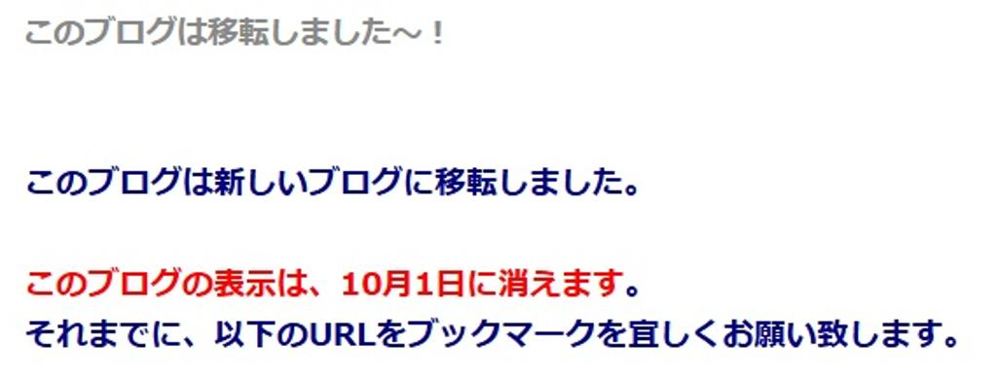
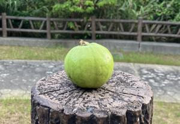

うるがいの話 ある日
最新: 無料のサービスは終わる【うるがいの話 ある日】とは 一日だけのプログです
『うるがいの話』の最新一日だけのプログで、通信料が少なく経済的だ。カニの画像をクリックすると全ての日付が載る『うるがいの話』サイトを表示します
|
|
【うるがいの話】 うるがい(ｳﾙｶﾞｲ urugai)とは、『もずくがに』の名前でとても大きくなります。 |
|---|---|
|
|
【カミマヤーの話】 猫のことを方言でマヤーといいます。カミマヤー（kamimayaa）とは、神の猫のことです。 |
|
【たながぁの音楽】 たながぁ（ﾀﾅｶﾞｰ tanagaa）とは手長えびのことで、何種類かあり大きいのは車 エビぐらいになります。 |

|
【ぶながぁの話】 ぶながぁ(ﾌﾞﾅｶﾞｰ bunagaa)とは、赤い髪の毛、赤い身体、そして身長は１ｍ２０ｃｍ ぐらい、川の蟹を食べているの目撃された。場所は沖縄県国頭郡大宜味村のと ある村僕の隣近所に住んでいる爺さんから、聞いた話です。 |
|
|
【ギーマの話】 ギーマ(giima)とは、山原の里山に咲くスズランに似た、 花を付けます。実は食べられます、 気が付くと口の周りが紫になっています。 |
2025年08月20日 (水）無料のサービスは終わる
15:06
『goo辞書』は、2025年6月25日（水）13時をもちまして、サービス
を終了いたしました」と発表。
goo blogサービス終了のお知らせ
この度、2025年11月18日をもちまして、goo blogはサービスを終了
することとなりました。
ここ数年、無料ブログサービスが次々と終了しています。
例えば下記のように、かつて人気を集めていたブログサービスも、
時代の流れとともに姿を消しています。
FC2ブログが同じ理由で終了する可能性はゼロではありません。
私が毎日みているプログのアドレスでは、すでに引っ越ししている
面倒くさいので、そのままのアドレスでみている。

無料のＦＣ２ブログは、『ぶながぁの話』で利用している。有料に
なったら、引っ越し予定している。そして、セキュリティのサイト
でない『うるがいの話』は、この前からヤフーの検索一覧に載らな
くなった。仕方ないで『うるがいとは』で検索して代替している。
【重要】ＬａＣｏｏｃａｎミニプラン（＠ｎｉｆｔｙホームページ
サービス）ご利用者様へプラン変更のお願い
いつも＠ｎｉｆｔｙ（アット・ニフティ）をご利用いただき誠にあ
りがとうございます。
このたび、より安全なサービスの提供を目指すため多くの声をいた
だいておりましたＨＴＴＰＳに対応いたします。それに伴いプラン
の見直しをおこない、２０２５年９月末をもちまして、「ＬａＣｏ
ｏｃａｎミニプラン（＠ｎｉｆｔｙホームページサービス）」の提
供を終了させていただくことになりました。
なんと！、いまは無料だが年間税込７，７２２円を払わないといけ
なくなった。マ、仕方ないか。
旧盆が近づいている、バンシルー（グヮバ）の実がなりはじめた。
